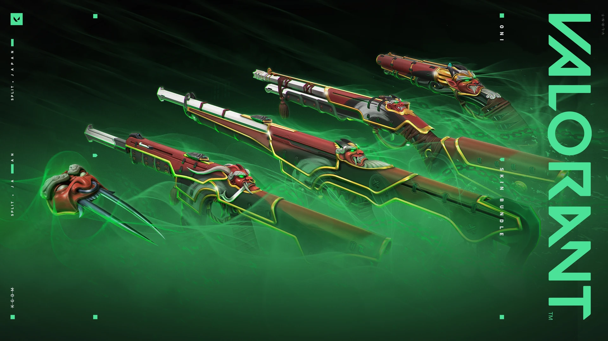
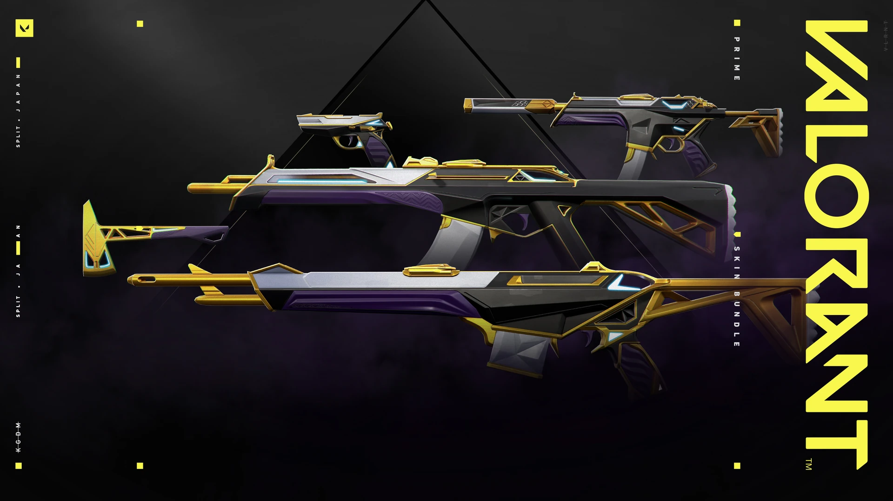
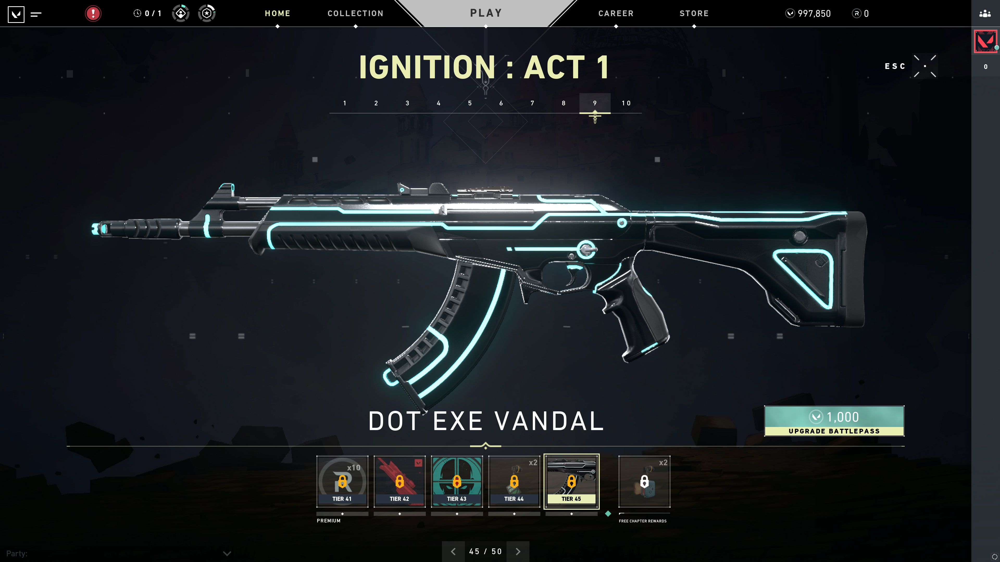
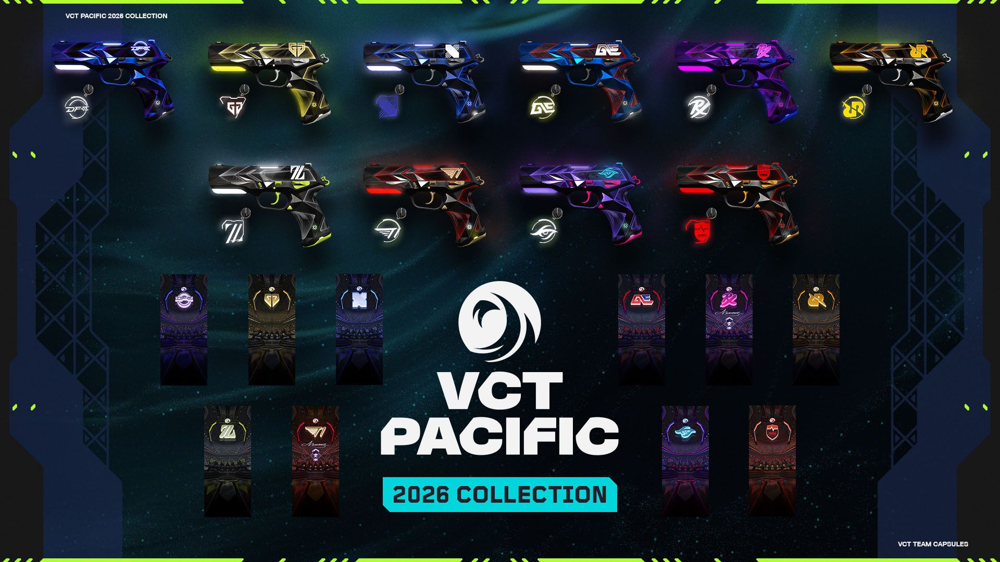
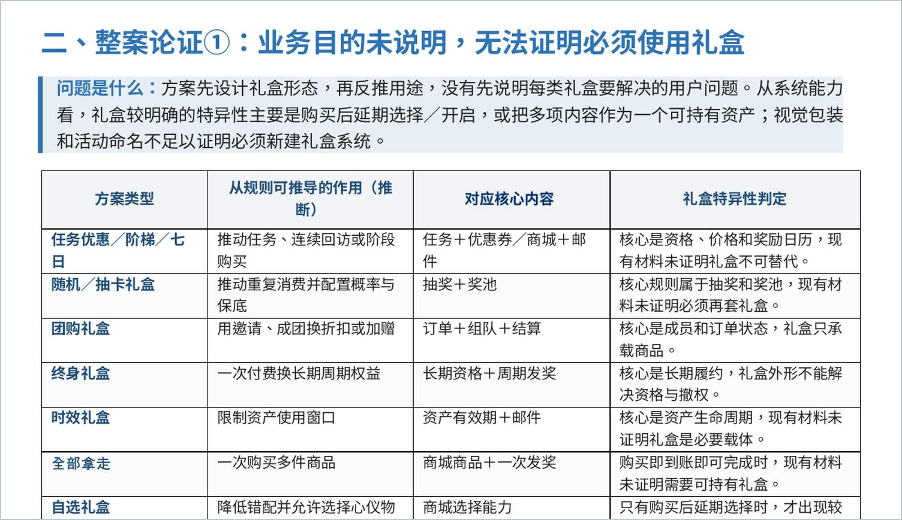
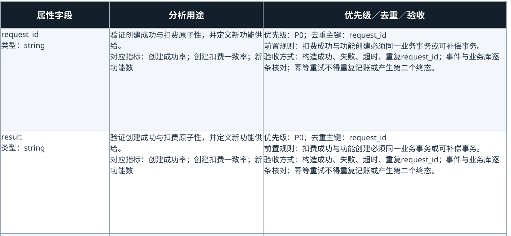

两端需要保持什么一致，又应该在哪些地方做差异化？
我的核心判断是：竞技循环核心、世界观与 IP 品牌认知统一；具体结构则按使用条件调整。手游降低进入与游玩的门槛，有机会覆盖不同认知基础的用户，运营也需要重新安排内容承接。
双端产品价值分工
端游和手游的差异并不止于屏幕尺寸。设备、时间、网络、组队和中断条件变化后，影响会继续传导到内容、关系、商品与赛事参与。
我的核心判断是：竞技循环核心、世界观与 IP 品牌认知统一；具体结构则按使用条件调整。手游降低进入与游玩的门槛，有机会覆盖不同认知基础的用户，运营也需要重新安排内容承接。
移动设备首先改变设备、输入、时间和组队成本。
不同进入来源与认知基础，影响先提供什么信息、再引导什么行动。
找人、组队、再次联系与局外互动的成本下降。
从高频使用延伸到展示；商品入口与赛季节奏仍需分别安排。
职业高度与大众参与仍需连接，但入口与组织重点不同。
这是论证顺序，不表示已经验证的因果关系。
公开介绍包括 5V5 英雄射击、公平对战、15 分钟排位、8 分钟极速战与端内外一键组队。
单局变短不等于长期留存自然发生。
真正要看的是首局后是否继续第二局、再次组队或进入排位。
触控与自定义操作可以提升效率，但不能由系统长期替代瞄准、判断与失误修正。
设备、输入、时间和组队成本发生在开局前；瞄准、技能时机、地图判断、信息交换和团队决策属于进入游戏后的竞技要求。两者必须分开。
固定 PC 环境转为随身设备，进入、网络、组队和中断条件随之变化。
触控与自定义操作可以提升效率，但不能由系统长期替代瞄准、判断与失误修正。
15 分钟排位与 8 分钟极速战扩大了可进入时段，但单局变短不等于长期留存自然发生。
一键组队降低发起协作的阻力，真正要看的是首局后是否继续第二局、再次组队或进入排位。
直接保留键鼠端操作密度、界面负担和长局节奏，会把设备差异转化为额外体验成本。
如果系统持续替代瞄准、判断和失误修正，短期更易上手，但会压缩竞技空间，削弱由操作与判断积累形成的竞技反馈。
教学除完成率外，还要定位按钮理解、触控设置、枪法练习和对局信息的具体阻塞点。短模式除参与量外，要继续看第二局、组队或进入排位；更多尝试不等于留存自然发生。
官方产品介绍包括移动适配、自定义操作、15 分钟排位、8 分钟极速战与一键组队。
以下四类并非固定画像，而是按主要进入来源与认知状态提出的分析假设；类型可重叠，目前也没有公开数据能直接给出规模和优先级。
已熟悉枪法、英雄、地图和经济系统。触控适配、短模式与便捷组队改变进入方式，局外空间、收藏和展示增加关系维系与身份表达的触点。
在本文的分析框架中，这类用户会优先比较实机枪感、性能、辅助边界、排位规则和高水平对局。本文用“机动驱动”和“站位／角度控制驱动”描述部分体验差异；这只是分析标签，不代表行业统一分类。
战队、选手与高光内容只是起点，还要把赛程接到启动游戏、观赛任务、战队助威、回流对局或赛事商品。观看端游比赛的观众，也可能通过手游进入。
高校与社区用户可能更在意同校队伍、报名入口、赛程安排、社团组织和持续活动。下载只完成第一步，还要看活动结束后社群能否继续运转。
类型可重叠，实际规模与优先级需要结合来源渠道、首周行为和用户访谈确认。上述行动是观察方向；播放、点击和下载不能单独证明认知变化或继续体验。
不同来源的用户可能有不同的优先疑虑，入口和需求也可以重叠。以下承接安排仍需结合渠道、首周行为与访谈验证。
| 进入来源 | 先回应什么、提供什么 | 观察什么 |
|---|---|---|
| 端游迁移 | 解释再次进入的理由减少基础规则重复解释，呈现移动端新增或使用成本更低的场景，以及局外关系与展示触点。 |
观察首局、组队、空间互动或回流。 |
| FPS 手游 | 先体验操作与竞技品质先用操作设置、训练和实战说明枪感、辅助边界、站位、预瞄与角度控制；复杂活动信息可以后置。 |
观察设置、训练与实战承接。 |
| 赛事驱动 | 连接观看与游戏行动战队、选手和高光内容之后，接到启动、观赛任务、助威、回流或赛事商品。端游观众也可能由手游承接。 |
观察观看至启动、回流与后续使用。 |
| 社群驱动 | 组织队伍与持续参赛先说清同校队伍、报名入口、赛程与社团组织，再观察参与能否延续到活动之后。 |
观察组队、完赛、复参与社群持续性。 |
端游已有固定车队、语音协作、赛事社区和长期好友。手游在此基础上改变找人、联系、关系维系与局外展示的方式。
公开事实报告引用的一周年版本中，包括一键组队、附近语音、个性广场、空间拜访、留言点赞、瓦谷交换、动作与气泡等触点。
这些功能分别处于发现、协作、维系与展示环节，下方按行为链展开。
附近语音、个性广场等触点降低找人成本。
一键组队把发现转化为发起协作。
完成一次协作，观察后续联系是否发生。
观察加友、空间互动与内容回应后，关系能否延续。
重复协作比单次联系人增长更接近真正关系沉淀。
分析时还需控制原有活跃度，避免把重度玩家本来就更高的使用率误判成功能增量。
安全规则应在功能设计阶段一并确定。
公开事实报告引用的一周年版本中，瓦酷空间支持陈列武器皮肤、瓦谷、卡面、荣誉徽章、纪念杯与无畏时刻，并允许访客留言和点赞。
需要验证展示入口增加的是“被看见”的机会，是否转化为关系和留存仍需看互动与复访。
| 资产 | 展示与互动场景 | 观察行为 |
|---|---|---|
| 武器皮肤 | 从第一人称体验延伸到空间陈列。 | 装备 / 陈列 / 互动 |
| 卡面 / 徽章 | 形成主页身份与参与经历的可见标识。 | 展示率 / 访问率 |
| 纪念杯 / 无畏时刻 | 展示参与经历，为好友提供可讨论、可回应的内容。 | 访问 / 留言 / 点赞 |
| 动作 / 气泡 | 把个性表达延伸到即时社交。 | 使用 / 回复 / 再次互动 |
| 瓦谷 | 把获得后的交换、收藏与展示继续接回互动。 | 交换 / 发布 / 复访 |
公开事实Riot 对外观的公开定位强调不影响玩法；武器模型、动画、音效、检视与击杀反馈主要持续发生在购买者第一人称画面。手游局外空间则新增更多可见触点。
品质差异必须在高频使用中被稳定感知；展示入口只是扩大价值被看见的场景。

外观、音效、动作、检视与击杀反馈是否在高频使用中成立。
待观察：装备 / 持续使用 / 复购空间、主页、好友访问与局外内容是否增加真实可见场景。
待观察：陈列 / 访问 / 互动资产是否能表达风格、支持对象、参与经历与社群归属。
待观察：展示后互动 / 赛事身份价格、升级成本、随机规则和获取路径是否能被清晰理解。
待观察：转化 / 退款 / 投诉公开事实经验推进免费与付费轨道奖励。
玩家购买的不只是奖励集合，还包括清晰目标、持续反馈和赛季参与记录。
要继续看购买后是否装备或陈列、是否产生互动、能否持续使用并带动复购。长期无人展示或展示后没有互动，新增入口可能只是换了库存的呈现位置。
Battle Pass 还要看完成度、任务压力和赛季内持续参与，再观察其与活跃、留存的关系。三项共享原则是本文主张；具体商品池、展示位置、价格弹性和更新频率应分别观察。
首发窗口集中转化
承接历史皮肤长尾
折扣再激活未转化需求
获得后的交换、收藏与展示
四个系统不能只看各自流水，还要一起检查首发、长尾、折扣与存量资产之间是否互相替代。
这里比较的是系统职责，不代表同一皮肤或玩家依次经过四个入口。
日常商店与夜市采用端游规则，瓦谷采用手游规则。
它们不是同一批商品放进不同入口反复陈列，而是分别承接首发、长尾、折扣再激活，以及获得后的交换、收藏和展示。
在需求最高的发布窗口提供确定供给，集中承接首发需求。
整包 / 单件 / 枪位贡献 / 同枪位替代把不断扩大的历史皮肤池变成长期可销售库存；随机发生在展示，不在购买结果。
出现周期 / 出现后转化 / 等待损耗六个随机武器皮肤优惠，从机制上看，以折扣再次承接未转化需求。
原价蚕食 / 等待折扣 / 优惠转化作用于获得后的重复资产、交换、收藏补全与局外展示。
交换率 / 发布 / 互动 / 复访公开事实Riot 曾说明，Sakura 在轮换商店上线后获取需求较强，团队随后将新皮肤系列改为 Featured 首发，以保证发布窗口内所有玩家都能直接看到新品。

公开事实10.08 版本赠礼说明明确：Featured Store 可选择完整套装或单件商品。
对高意愿用户，整套购买减少逐件选择成本，强化主题完整性。
对枪位需求明确的用户，单件入口避免整包价格成为唯一门槛，保留确定选择。
公开事实单件皮肤每 24 小时轮换，错过后无法确认下一次返场时间；玩家看到具体商品和价格后，仍进行确定性购买。
图中为 2020 年历史商店界面，用于说明结构，不代表当前商品清单。
不断扩大的历史皮肤池仍有再次购买机会，但不能随时检索并购买全部旧商品。
未知返场时间提高目标出现时的即时决策压力；等待过久也可能让需求衰减，甚至让用户延后原价购买。
公开事实端游夜市向每位玩家展示六个随机武器皮肤优惠；揭示商品后，用户再比较并决定是否购买。
图中为夜市机制示例，具体商品与优惠随活动变化。
用户不是付费追逐未知结果，而是在揭示后对具体商品与折扣做选择。
需要同时看优惠转化、原价销售蚕食、是否形成“等折扣”预期，以及夜市对日常商店和首发销售的替代。
公开事实报告引用的手游 1.24.0 版本允许使用交换币交换当期且重复持有的瓦谷，并加入个性广场、作品发布、点赞和收集进度奖励。
这是一条待跟踪的行为路径；规则仅涉及当期且重复持有的瓦谷。交换期限、重复资产价值与成本需要说清，不能只看单次交换量。
新品套装、Battle Pass、收藏活动、夜市和赛事商品同时争夺预算、注意力和行动顺序时，用户决策负担增加，运营也更难判断单项动作究竟带来什么。
新品套装承接首发需求；Battle Pass 建立赛季目标。
观察排位、组队、日常轮换、瓦谷和空间系统是否形成持续使用。
处理进度追赶、历史内容轮换与补购。
可随赛历穿插，测试观看向回流、助威和战队商品的转化。
让玩家先看到具体内容与价格，再决定购买。避免把夜市这类折扣再激活工具作为首购主入口。
将任务拆成可由单局或少量短局完成的进度，避免默认长时间连续在线。
首购与任务安排都属于策略假设，需要观察首购转化、任务完成度、任务疲劳与后续复购。赛季初、中、末的安排也只是起点，应随版本、用户响应和数据调整。

图中为 2020 年 IGNITION Act 1 界面，用于说明进度与奖励结构。
公开事实游玩获得经验、推进赛季进度；免费和付费奖励轨道并存。
免费奖励轨道
付费奖励轨道
分析判断阶段目标、持续反馈与赛季参与记录构成 Battle Pass 的过程价值。
只有主指标改善，并且退款、投诉和其他商店损失没有明显恶化，动作才适合扩大。
首发展示 → 整包 / 单件选择
是否出现 → 出现后预览
揭示 → 比较具体优惠
各入口分别关联购买结果
失败仍记录结果状态、失败原因和订单唯一标识。
不同商店是并行入口，不要求用户依次经过。购买后的箭头表示观察链，不代表必然复购。
| 商品 / 场景 | 风险 | 观察内容 |
|---|---|---|
| 新品 | 同枪位替代 | 整包与单件结构是否转移收入 |
| 日常商店 | 等待损耗 | 出现周期、预览与出现后转化 |
| 折扣 | 原价蚕食 | 首发 / 日常损失与等待折扣预期 |
| 通行证 | 任务疲劳 | 完成压力与赛季持续参与 |
瓦谷与空间互动另行跟踪：获得 → 重复 → 交换 → 发布 → 互动 → 复访。涉及随机获取的系统应披露概率；交换系统要写清期限、重复价值与成本。
双端都需要连接竞技高度与大众参与，只是成熟度、入口和组织方式不同。端游已同时覆盖职业、全国、高校与合作赛事，手游也需要建立对应的参与和向上路径。
端游维持成熟职业高度；手游需要持续展示最高水平的顶层赛事。未来体系的发展条件在下一页展开。
全国赛事承接更广泛参与。两端入口不同，仍需分别观察报名、完赛、复参与晋升。
高校和社区赛事提供组队、完赛与复参场景，活动结束后还需观察队伍与社群能否继续运转。
合作资源要继续验证体验、参赛和后续留存；曝光不能单独说明资源发挥了作用。
VCT 2026 官方手册列出四个区域、四十八支队伍；同赛季增加了 Challengers 队伍进入顶级赛事阶段并争取冠军赛资格的机会。全国与高校赛事也已存在端手游双赛道。
端游更重要的是维持成熟职业体系，同时让大众赛事继续承担晋升、社区参与和重复参赛；手游更需要降低报名、组队和完赛的入口成本，并验证高水平队伍供给、观赛、复参与向上晋升，是否足以支撑进一步发展独立职业联赛。
| 赛事层级 | 端游当前重点 | 手游当前重点 |
|---|---|---|
| 顶层竞技 | 维持成熟职业体系、战队与赛区叙事 | 建立清晰的移动端竞技高度与向上认知 |
| 全国 / 大众 | 承接职业之外的大规模参与，形成晋升与复参 | 利用端内入口降低报名、组队和完赛成本 |
| 高校 / 社区 | 通过高校赛与社群活动沉淀本地队伍与持续参赛 | 连接高校、平台与端内入口，推动组队、完赛与复参 |
| 品牌 / 合作 | 补充城市 / 校园赛事供给，验证资源能否带来参赛与留存 | 结合设备与渠道资源扩大触达并转化为实际参赛 |
分析判断端内赛道减少从游戏到参赛入口的跳转；高校和平台赛道将社群或内容触达接到组队参赛。
本文判断：手游没有必要一开始复制完整 VCT。未来是否发展独立职业联赛，应看高水平队伍供给、观赛、复参和向上晋升数据；这不是官方既定规划。
手游重点跟踪报名、组队、完赛、复参、观赛后游戏回流及向上转化。大众、高校与品牌合作不能只用曝光验收。
公开事实2026 全国大赛明确设置端手游双赛道；高校总决赛同样包含端游和手游。卓威高校对抗赛则通过城市赛、大区赛、全国赛和年度总决赛补充校园赛事供给。
全国大赛包含端手游双赛道。终稿写明的 VCT CN 路径适用于端游优胜队伍：经专业选拔赛争取第二赛段季后赛入围赛资格。
看：报名 / 完赛 / 晋升 / 复参连接同校身份、队伍组织和持续参赛，沉淀本地社群关系。
看：组队 / 到场 / 复参 / 社群留存补充城市和校园赛事供给，关键是资源是否真正带来体验、参赛和后续留存。
看：触达→报名→完赛→后续活跃卓威高校对抗赛的城市赛、大区赛、全国赛与年度总决赛，是独立的校园晋级链路。合作验收应分别检查体验、参赛及后续留存，不能把不同赛事合成同一条晋升路径。
公开事实2025 战队胶囊被 Riot 描述为相对 2024 的“第二套球衣”；2026 胶囊继续以战队主题 Classic 为核心，并加入动态卡面、喷漆和挂饰。

图示为 2026 年太平洋赛区商品。战队品牌、Classic 与赛事身份成为同一商品组合。
Classic 是开局即持有、也会高频进入装备栏的武器。购买后可在手枪局、对局和转播画面中反复展示支持；共同枪位部分控制结构差异后，粉丝关系、赛季表现、视觉设计、区域规模和曝光会更明显地影响销售。
公开事实Riot 2026 年胶囊说明定价 2320 VP；购买过同队 2024 或 2025 胶囊的玩家可按 1650 VP 购买。
销量之外，观察观看至启动转化、商品装备率、赛后留存、跨年复购与战队收益分布。“观看 → 认同 → 商品使用”是分析与观察方向，不代表观看必然促成购买。
从现有产品设计看，双端共享竞技公平、枪法与战术决策、英雄与世界观、内容品质和重大赛事认知；需要分别设计的是玩家如何进入、如何再次组队、商品如何使用和展示，以及怎样报名参赛。
短模式、触控适配与便捷组队首先改变参与条件。
真正的价值要看购买后使用、展示、互动与复购。
合作资源必须继续进入参赛、复参与回流。
使用条件 → 用户承接 → 社交关系 → 商品价值与节奏 → 赛事任务。新增参与场景能否形成持续行为，决定它们能否成为双端共同增长的一部分。

这份脱敏材料来自实际工作产出：先核对业务目的和用户问题，再判断是否真的需要新增商品形态，最后比较规则与实现成本。

这份实际工作产出先核对业务目的，再比较任务、优惠券、商城、邮件、抽奖奖池等已有结构能否解决问题。礼盒的特殊价值，需要从购买后延期选择、开启或可持有资产等规则中说明；视觉包装与活动命名不足以证明必须新建系统。
此处展示作者实际工作产出的脱敏局部，用于说明评审方法；原图保留原有裁切范围。
终稿说明将 request_id、result、error_code 等属性与触发条件、分析用途和验收方式对应。下方真实截图为图 2B，直接可见 request_id、result 及去重、事务与验收要求。

前文关于商品、社交和赛事合作的判断，到了执行阶段都要落成具体事件、字段、指标和风险护栏，才有条件进入版本评审与上线验收。
| 字段 | 用途 | 依据 |
|---|---|---|
request_id | 贯通同一业务事务并作为去重主键 | 图 2B 可见 |
result | 区分功能结果 | 图 2B 可见 |
error_code | 定位失败与异常状态 | 终稿正文说明，图 2B 未展示 |
原图可见要求：优先级 P0，去重主键 request_id；扣费成功与功能创建必须属于同一业务事务或补偿事务。
逐条核对事件与业务库，幂等重试不得重复记账或产生第二个终态。
正文沿用终稿的 2026-09-02 资料范围。下列 16 项书目用于核验公开规则，机制判断、风险与策略假设按页内标签区分；链接已于 2026-09-07 检查。
引用 1.24.0 一周年版本说明；相关玩法及空间在该版本具有活动范围，本文不把它们写成永久开放能力。
Riot 2026 商品说明的 VP 定价；1650 VP 限已购同队 2024 或 2025 胶囊者。
官方素材：Reaver 商品宣传图、Prime / Oni 套系官方壁纸、Haven、Sunset、Lotus、Icebox 地图实景、官网 V 标志、商店、夜市、Battle Pass、2026 太平洋赛区战队胶囊及VCT 赛事现场。历史界面用于说明对应机制，不表示当前商品或活动。
地图背景按页面的内容与阅读任务选择；电竞章节使用官方 VCT 赛事现场照片。背景只承担环境氛围，不代表手游场景、当前赛事地图池或商业化效果。
Jett 游戏立绘由第三方 VALORANT-API 托管，非 Riot 官方直接分发。两份工作产出图取自作者终稿嵌图，保留脱敏范围与原始裁切。
Reaver 系列为官方商品宣传图，刊载于 2022 年文章，用作外观内容示例；首页保留完整画面。Prime 与 Oni 使用官网媒体页提供的套系壁纸，保留完整比例；用于外观内容示例，不代表当前在售、手游已上架或已验证的转化表现。
商店采用 2020 年官方历史截图；夜市采用 Riot 支持页真实界面，该文章于 2025 年更新，截图拍摄日期未确认。两者均用于说明机制，不代表当前商品清单。
Battle Pass 采用 2020 年 IGNITION Act 1 官方界面；战队胶囊采用 2026 年太平洋赛区官方宣传素材；赛事背景刊载于 2025 年官方文章，拍摄日期未注明。